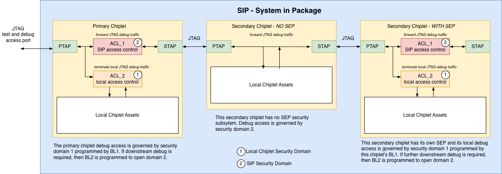

Life Cycle Controller (LCC)
The Life Cycle Controller (LCC) supports multiple security domains in chiplet-based systems. It manages the device life cycle: it decodes the life-cycle state and generates the debug/test/function feature control vector that corresponds to that state.
The LCC performs the following actions to support life cycle management:
-
Receive inputs from the SEP OTP (fuse) shadow registers (populated by the OTP sense FSM at power-on)
-
LC_STATE[3:0]
-
Disable vectors: SIP_DIS and SYS_DIS
-
-
Generate the per-LC-state debug/test/function feature control vector (
feat_ctrl_o) and send it to its downstream destinations (TAP, DAP, DFT, peripherals, Key Manager). -
Maintain volatile in-field debug demotion state via the DEMOTE_1, DEMOTE_2, DEMOTE_LOCK_1, and DEMOTE_LOCK_2 CSRs, and apply the resulting demotion feature-control profile to
feat_ctrl_o. See Demotion 1 and Demotion 2 — In-Field Debug Demotion. -
Detect signal-integrity errors on the differentially encoded LC_STATE input arriving from the OTP shadow register; fail closed (force
feat_ctrl_o = 0) on detection.
The block diagram below shows a high-level view of the Life Cycle Controller components.

1. Demotion 1 and Demotion 2 — In-Field Debug Demotion
In addition to the LC state stored in OTP, SEP implements two volatile demotion CSRs (DEMOTE_1, DEMOTE_2) and two companion lock CSRs (DEMOTE_LOCK_1, DEMOTE_LOCK_2). When asserted, the demotion CSRs grant additional in-field debug access without changing the OTP-stored LC state. SEP cold reset clears all four registers, restoring the device to its OTP-stored LC state.
Demotion 1 and Demotion 2 are two independent controls that differ only in which feature-control bits they gate. Demotion 1 (DEMOTE_1) gates the local debug group (DBG_1) — debug of the chiplet’s own logic. Demotion 2 (DEMOTE_2) gates the inter-chiplet debug-bypass group (DBG_2) — the SiP-owner debug-access path at this chiplet, which admits external (PTAP) debug traffic into the chiplet and forwards it onward to the next chiplet in the chain (see Multiple Security Domains). There is no ordering or dependency between the two demotion bits: either may be asserted without the other. The controls are independent even though their effects compose: opening the local debug group (DBG_1) alone does not make local debug externally reachable until the SIP_DBG access path (DBG_2) is also open. Each control selects a per-LC-state feature-control profile (see Per-LC-state feature control profile), and its authorization is governed by the Secure-Boot Signing Model.
1.1. Secure-Boot Enforcement
Whether SEP enforces secure boot — that is, whether a manifest must be verified before its image is allowed to run — is decided by the lifecycle state and two fuse controls. This decision is separate from the signing model described below, which governs who must sign once enforcement applies.
-
PROD and PROD_END: secure boot is enforced, unless it has been explicitly disabled by the SBOOT_DIS fuse (below).
-
TEST_DEV: secure boot is not enforced by default, so unsigned development images can be loaded during bring-up and firmware development. It is enforced, however, when chiplet-scope debug is disabled (CHIPLET_DBG set in SIP_DIS or SYS_DIS), so a locked-down debug posture cannot be bypassed by loading unsigned code.
-
SBOOT_DIS: a global secure-boot disable. Burning SBOOT_DIS to 1 disables secure boot in every lifecycle state, overriding the otherwise-mandatory enforcement in PROD and PROD_END. An owner that relies on secure boot must therefore leave SBOOT_DIS unburned and write-lock it via the LOCK field.
1.2. Secure-Boot Signing Model
Implementation status — deferred to a later release, not abandoned.
This release verifies a single classical RSA-3072 signature; everything beyond
that is deferred. The multi-owner model described below — REQUIRED_SIGNERS,
REQUIRED_ALGS, per-owner co-signatures and the demotion authorization that
rides on them — is therefore not implemented in SEP ROM today: BL0 reads
neither fuse field, and while the OCA boot manifest defines verifier-key and
co-signer entries, the validation library BL0 links does not verify them. What
BL0 enforces today is a single root key — the manifest names one key slot, that
slot’s digest is matched against a ROM-embedded digest or an OTP hash bank, and
one RSA-3072 signature is verified against it (see the CPU Subsystem chapter’s
BL0 Secure Boot section). A later release adds combined classical + PQC
signatures together with the verifier and co-signer keys that populate
REQUIRED_SIGNERS and REQUIRED_ALGS. The fuse fields are provisioned for that
release; the model below is the target design, and describes intended rather
than current behaviour.
|
SEP secure boot decides, for each manifest it verifies, which owners must sign it and with which algorithms. Enforcement — including the demotion authorization that rides on it — is delegated to the SEP boot firmware; the LCC hardware does not check signing authority or inspect manifest contents. The one hardware-rooted anchor is SEP ROM, which reads the fuse-provided requirement to verify the first manifest (BL1). Up to three owners participate: the chiplet creator (root of trust; its classical and PQC root digests are embedded in SEP ROM), the SiP owner, and the system owner.
Two eFuse policy fields govern the model (see the OTP fuse controller fuse-field table for field details):
-
REQUIRED_SIGNERS— owners whose signature a manifest must carry, one bit each for the SiP owner and the system owner. Per owner, 1 = required, 0 = not-required; the default all-zero value requires no additional owner. The chiplet creator is the root of trust and always authenticates BL1, so it has no bit — it is implicitly always required. Burning a bit only ever adds a required signer (the fuse is monotonic), so the standard LOCK bits exist but are not needed here. -
REQUIRED_ALGS— per owner, which algorithms (classical: ECDSA P-384 or RSA; post-quantum: ML-DSA) that owner must sign with, applied only when the owner is required.
Key provisioning is implicit: there is no separate provisioning fuse. If an
owner’s key is not provisioned, its REQUIRED_SIGNERS bit is simply left
unburned so that owner is not required.
Requirement rule. For the manifest being verified, an owner must sign if it is
marked required in the shadow — the chiplet creator always, and the SiP or
system owner when its REQUIRED_SIGNERS bit is set. If so, the manifest must
carry a valid signature for each REQUIRED_ALGS-selected algorithm, verified
against that owner’s burned, non-revoked key of that type. Signatures from
non-required owners are ignored.
Propagation. SEP ROM verifies the BL1 manifest against the shadow value loaded from the fuse at cold reset. Thereafter, each successfully verified — and therefore trusted — boot stage sets the required signers for the next manifest by writing the shadow: because a stage runs only once it has been authenticated, it is by definition authorized to make the change, and may freely add or drop owners. Because verification is performed by firmware, this propagation is enforced by the authenticated firmware itself — a chain of trust rooted in SEP ROM and the fuse-provided requirement that ROM uses to admit BL1; no additional hardware gate is required, since a compromised stage would bypass its own verification regardless.
Like the SiP owner, the system owner is required exactly when its
REQUIRED_SIGNERS bit is set: if the bit is burned, the shadow register reloads that
requirement at every cold reset and BL1 — and each later stage — must carry the
system-owner signature; if that is not wanted, the bit is left unburned.
Post-quantum signing. Motivated by the NIST standardization of post-quantum
signatures (FIPS 204, ML-DSA), each owner may be provisioned with both a
classical and a post-quantum root key, and REQUIRED_ALGS selects, per owner,
whether one or both must sign. Requiring both yields a combined
classical-plus-post-quantum signature for that owner, neither part of which
alone is sufficient.
Demotion authorization. Demotion is carried in a boot manifest and is
authorized by this same signing model rather than by a hardware-ordered
transition. Demotion 1 and Demotion 2 are authorized identically; Demotion 2 also
drives the dedicated inter-chiplet debug-bypass field, but this adds no special
policy. By default — with no REQUIRED_SIGNERS bit burned — any boot stage
whose manifest authenticates under the current required-signer set may assert a
demotion, so a later, already-authenticated stage that asserts one is implicitly
authorized through the chain of trust. Because the inter-chiplet bypass is a
SiP-owner concern, the SiP owner is given the option to gate Demotion 2: by
burning its own REQUIRED_SIGNERS bit it forces every demotion-asserting
manifest to carry the SiP-owner signature, and it can then lock Demotion 2 (see
Lock Behavior) to prevent demotion outright. This is distinct from RMA,
whose state transitions are hardware-ordered. The LCC
hardware does not check any of this; it simply applies the feature control
profile that corresponds to the DEMOTE_1 / DEMOTE_2 register bits. The demotion
assertion is not tied to a specific boot stage: any bootloader stage may carry
it, because what authorizes it is the set of signing authorities on the manifest,
not which stage performs the write.
Public keys themselves are never stored in eFuse — only their hash
digests are. The chiplet creator’s root public-key digests (classical and PQC)
are embedded in SEP ROM; SIP_PUBK_HASH0/1 / SIP_PUBK_PQC_HASH0/1 (two
slots, so the SiP owner retains a usable root after revoking one) and
SYS_PUBK_HASH / SYS_PUBK_PQC_HASH hold the SiP- and system-owner digests in
eFuse; and CHIPLET_PUBK_HASH0/1 / CHIPLET_PUBK_PQC_HASH0/1 hold additional
chiplet-owner authentication-key hashes that supplement the chiplet-creator
digests in SEP ROM. Every such key entry can be revoked individually through
CHIPLET_PUBK_REVOKE (see the OTP fuse controller fuse-field table in this
chapter).
|
1.3. Signing-Model Examples
These examples show which signers are required when secure boot is enforced for a manifest. Whether it is enforced at all is a separate decision, governed by the rules in Secure-Boot Enforcement; the signing model governs only the required-signer set once enforcement applies.
No REQUIRED_SIGNERS bits burned. BL1 requires the chiplet-creator signature only (the chiplet creator is always required; no additional owner is).
SiP owner required. REQUIRED_SIGNERS[SiP] is burned, typically at ownership
transfer. BL1 requires the chiplet creator and the SiP owner. BL1, having been
signed by both, may drop the chiplet requirement for BL2 (handoff), so BL2
requires only the SiP owner.
System owner added downstream. With the SiP owner required, a downstream stage adds the system owner in the shadow for its successor, so that manifest requires the system owner (or the SiP owner plus the system owner, if the SiP owner co-signs it).
In every case the shadow register reloads from the REQUIRED_SIGNERS fuse at the
next cold reset, so the chain restarts from the fuse-provided requirement.
1.4. Lock Behavior
-
When DEMOTE_LOCK_1/2 = 0, firmware can assert DEMOTE_1/2 = 1.
-
Once DEMOTE_LOCK_1/2 = 1, DEMOTE_1/2 can no longer be changed until SEP cold reset clears both registers.
-
A signed boot image whose manifest takes ownership of the demotion decision for this boot programs
DEMOTE_LOCK_1/2 = 1as part of committing the decision. The locked value may beDEMOTE_1/2 = 0(commit non-demoted state) orDEMOTE_1/2 = 1(commit demoted state) — in either case, locking commits the decision and prevents any later boot stage from modifying it until cold reset. -
If the manifest instead defers the demotion decision to a later boot stage, it leaves
DEMOTE_LOCK_1/2 = 0so the next stage can complete the programming. The demotion-decision protocol a manifest uses across boot stages (selector / value / deferral hint) is described in the OCAH SEP boot specification.
1.5. Reset Behavior
SEP cold reset clears all four demote registers (DEMOTE_1, DEMOTE_2, DEMOTE_LOCK_1, DEMOTE_LOCK_2), restoring the device to its OTP-stored LC state.
2. Multiple Security Domains
OCAH defines two types of security domain, distinguished by which owner controls debug/test access to the assets in that domain:
-
SiP-owner domain — controlled by the SiP owner. Governs debug access to SiP-owned assets and the debug-access path into every chiplet (the PTAP chain), including onward access to downstream (secondary) chiplets.
-
Chiplet-owner domain — controlled by a chiplet owner. Governs debug access to that chiplet’s own internal assets.
A system instantiates one SiP-owner domain (shared) plus one chiplet-owner domain per chiplet that has its own protected assets. The diagram below shows three chiplets — one primary and two secondaries — giving three security domains: the SiP-owner domain, chiplet domain 1 (primary), and chiplet domain 2 (secondary). A chiplet may or may not have a local SEP and life-cycle state.

Access is structured as follows:
-
The SiP-owner domain is the debug-access network. SIP_DBG gates the SiP-owner domain at each chiplet that implements its own SEP/LCC: it admits external (PTAP) debug traffic into that chiplet and passes it onward toward downstream chiplets. Debugging a chiplet’s assets requires SIP_DBG to be enabled on each LCC-bearing chiplet along the debug path, including the target chiplet itself when it has its own LCC. A chiplet without a local SEP/LCC has no disable vectors of its own. Instead, the primary chiplet’s SiP-owner feature control gates the DFT traffic before it is forwarded downstream, so the chiplet is governed by the SiP-owner domain (see Non-Primary Chiplets).
-
Chiplet-owner domains gate each chiplet’s local assets. A chiplet’s own protected assets additionally require that chiplet’s local gate (CHIPLET_DBG); the SEP’s own internal state has a further local gate, SEP_DBG (see Disable Vector Format (SIP_DIS / SYS_DIS)). Chiplet-owner domains are mutually independent — each is opened separately under its own chiplet owner’s control, and opening one chiplet’s domain does not require any other chiplet’s domain to be open.
For the three-chiplet system in the diagram (chiplet 1 primary, chiplet 2 intermediate secondary without a SEP, chiplet 3 secondary):
-
Debugging chiplet 1’s local assets requires SIP_DBG(1) and CHIPLET_DBG(1).
-
Debugging chiplet 2 requires only SIP_DBG(1): chiplet 2 has no local SEP/LCC and therefore contributes no local gate. SIP_DBG(1) gates the DFT traffic before the primary chiplet forwards it downstream (see Non-Primary Chiplets).
-
Debugging chiplet 3’s local assets requires SIP_DBG(1), SIP_DBG(3), and CHIPLET_DBG(3): chiplet 2 contributes no gate on the path, and the primary chiplet’s CHIPLET_DBG(1) is not required.
Local access control is therefore exercised by both owners: the SiP owner controls the debug path to every chiplet (the SiP-owner domain), and each chiplet owner controls its own chiplet-owner domain.
3. LC State Machine
The LC controller is a stateless decoder of the LC_STATE shadow
register provided by the OTP/Fuse controller. The OTP controller
initializes the shadow-register output to the INVALID encoding
(4’b1111) and only drives it to the OTP-stored LC state value once
fuse sensing is complete (see OTP fuse controller in this chapter).
The LCC’s output therefore tracks fuse sensing automatically: it produces the
INVALID feature-control profile before fuse sensing completes and the
per-LC-state profile (TEST_DEV / PROD / PROD_END / RMA_SIP / RMA_CHIPLET)
afterward.
Field debugging of production packages is supported by the two volatile demotion CSRs (DEMOTE_1, DEMOTE_2) rather than by a separate LC encoding. Demotion acts in TEST_DEV and PROD, opening the corresponding debug group (DBG_1 for Demotion 1, DBG_2 for Demotion 2) as given in Per-LC-state feature control profile; it does not affect DFT or Function, and does not change the RMA_SIP or RMA_CHIPLET profiles, which are fixed by the LC state. A chiplet cold reset resets the DEMOTE_1/2 and DEMOTE_LOCK_1/2 bits.
Demotion 1 and Demotion 2 are independent (see Demotion 1 and Demotion 2 — In-Field Debug Demotion): DEMOTE_1 opens the local debug group (DBG_1) and DEMOTE_2 opens the inter-chiplet debug-bypass group (DBG_2). Any combination of the two is legal; there is no ordering between them, and neither is tied to an owner level or to an RMA state. Their authorization is governed by the firmware signing model (see Secure-Boot Signing Model).
Entering RMA_CHIPLET requires two successive token matches: the device must first enter RMA_SIP via the RMA_SIP_TOKEN, then transition to RMA_CHIPLET via the RMA_CHIPLET_TOKEN. Unlike demotion, this RMA ordering is enforced by hardware.
The Key Manager’s key derivation function (KDF) uses the DEMOTE_1/2 bits in addition to CHIPLET_UID, SIP_UID, SYS_UID, and LC_STATE as inputs. Mixing the DEMOTE_1/2 bits into the KDF ensures that the derived keys in a demoted (debug) state are distinct from the live keys in the non-demoted PROD state.

During normal chiplet operation, the current LC state is retrieved from OTP and stored differentially in shadow registers, then propagated to the rest of the chiplet — and, from a primary chiplet, potentially onward to secondary chiplets.
The encodings shown in this table are the raw 4-bit LC_STATE values as
programmed in OTP. When the fuses are sensed, each value is differentially
(complementary) encoded into the shadow registers noted
above; the LCC decodes that shadow value with a signal-integrity check
that fails closed (forces feat_ctrl_o = 0) on any non-complementary
codeword, guarding the LC_STATE path against fault injection (e.g. laser
or FIB modification).
| LC State Name | Encoding | Description |
|---|---|---|
TEST_DEV |
4’b0000 |
Default silicon state at manufacturing time. The chip is open for ATE/SLT testing, fuse provisioning, and mission-mode software development, with certain chiplet features disabled as defined by the chiplet creator, the SiP owner, and the system owner. In this state, the hash digests of the secret tokens (RMA_CHIPLET_TOKEN and RMA_SIP_TOKEN) are programmed into OTP by the chiplet creator and the SiP owner, respectively. The disable vectors (SIP_DIS and SYS_DIS) are likewise programmed into OTP by the chiplet creator and the SiP owner. |
PROD |
4’b0001 |
Product functioning state. In-field debug is enabled by the volatile DEMOTE_1 / DEMOTE_2 registers (not a separate LC encoding): DEMOTE_1 opens the local debug group (DBG_1) and DEMOTE_2 opens the inter-chiplet debug-bypass group (DBG_2). |
PROD_END |
4’b1000 |
Terminal product state; the only permitted transition is to INVALID. This state is entered from TEST_DEV for special use cases in which RMA is not allowed. |
RMA_SIP |
4’b001X |
Enables the SiP owner to debug and test the part. The secret token (RMA_SIP_TOKEN) must be presented to enable the transition from PROD or TEST_DEV. |
RMA_CHIPLET |
4’b011X |
Enables the chiplet owner to debug and test the part. All features are enabled (neither SIP_DIS nor SYS_DIS applies), unlike TEST_DEV, which still honors SIP_DIS/SYS_DIS. The secret token (RMA_CHIPLET_TOKEN) must be presented to enable the transition from RMA_SIP. |
INVALID |
All other values |
Silicon with an invalid OTP state. This is the end-of-life state: the chip is permanently inoperable. |
4. Debug and Functional Feature Control
Debug and functional features are gated at runtime by the feature
control vector feat_ctrl_o. This vector is not stored directly: it is
derived from two 64-bit disable vectors held in OTP shadow registers — SIP_DIS and SYS_DIS — as the inverted OR of the two, gated per LC
state, then
overridden by SEC_DIS:
`feat_ctrl_o = ~(SIP_DIS | SYS_DIS)` (per-LC-state gating; then SEC_DIS, see below)
In other words, each feature’s enable is the inverse of its disable bits.
4.1. Disable Vector Format (SIP_DIS / SYS_DIS)
The table below defines the disable vector format — the bit layout shared by both SIP_DIS and SYS_DIS (each is 64 bits). Each defined bit gates a specific feature or its associated scan chain; the remaining bits are reserved for adopter extension (see Asset and Scan-Chain Protection and Adopter Extension).
Throughout this chapter T (True) means a feature is enabled and F (False)
means it is disabled. The SIP_DIS / SYS_DIS bits are disable masks: a bit
value of 1’b1 disables its feature and 1’b0 enables it (so a feature is in
the T/enabled state exactly when its DIS bit is 1’b0).
For demotion, the 48-bit debug group is split into two sub-groups: DBG_1 — bits [23:0] (local debug) — gated by Demotion 1, and DBG_2 — bits [47:24]
(the inter-chiplet debug-bypass path) — gated by Demotion 2. The demotion
profile in Per-LC-state feature control profile refers to these sub-groups as
SIP_DIS.DBG_1 / DBG_2 and SYS_DIS.DBG_1 / DBG_2.
| DIS bit index | Feature Category | Feature Name | Feature Description (1’b1 disables the feature; 1’b0 enables it) |
|---|---|---|---|
0 |
debug (DBG_1) |
SEP_DBG |
Coarse-grained debug enable for the SEP scope: the local gate for SEP internal state. |
1 |
debug (DBG_1) |
CHIPLET_DBG |
Coarse-grained debug enable for the chiplet scope. |
2 |
debug (DBG_1) |
SEP_FUSE_DBG |
|
3 |
debug (DBG_1) |
SMC_FUSE_DBG |
|
4-23 |
debug (DBG_1) |
Reserved |
Available for adopter-defined local (DBG_1) debug scan chains. See Adopter Extension. |
24 |
debug (DBG_2) |
SIP_DBG |
Coarse-grained debug enable for the SiP scope: the inter-chiplet debug-bypass gate (DBG_2, gated by Demotion 2) that admits external (PTAP) debug traffic into this chiplet and forwards it onward to the next chiplet via the outbound JTAG PTAP. Debugging a chiplet’s assets requires SIP_DBG enabled on each LCC-bearing chiplet along the debug path, including the target itself when it has its own LCC; chiplets without a local SEP/LCC contribute no gate (see Multiple Security Domains). |
25-47 |
debug (DBG_2) |
Reserved |
Available for adopter-defined inter-chiplet debug / DFT forwarding paths. Each allocated bit is consumed on the LCC-bearing chiplet to gate the corresponding traffic before it is forwarded downstream. See Adopter Extension. |
48-63 |
function |
Reserved |
Available for adopter-defined functional feature gating. See Adopter Extension. |
4.2. DIS Vector Ownership: Predecessor-Programs-Disables
OCAH uses a predecessor-programs-disables convention. Each X_DIS vector specifies restrictions imposed by an earlier owner that should apply for the rest of the part’s life (until the chiplet creator itself regains full access via RMA_CHIPLET):
-
SIP_DIS — programmed by the chiplet creator before the part is transferred to the SiP integrator. A bit value of 1 disables the corresponding feature for everyone below the chiplet owner — it remains in force through SiP-owner access and is cleared only at chiplet-owner access (RMA_CHIPLET).
-
SYS_DIS — programmed by the SiP owner before the part is transferred to the system integrator. A bit value of 1 disables the corresponding feature for the system owner only — it does not bind the SiP owner or chiplet owner, and is cleared once SiP-owner access (RMA_SIP) is reached.
The system owner has no successor in the OCAH ownership chain, so
there is no third DIS vector restricting it. The system owner’s
own fuse fields (SYS_PUBK_HASH, SYS_UID) are provisioned by
the system owner directly before transitioning the part from
TEST_DEV to PROD. See the OTP fuse controller section in this
chapter for the full multi-owner provisioning sequence.
4.3. Combining Rule: OR then Invert
The per-LC-state formulas combine SIP_DIS and SYS_DIS with bitwise
OR, then invert (~(SIP_DIS | SYS_DIS)) to produce the
positive-logic feat_ctrl_o output ("1 = feature enabled"). The OR
is the natural fuse-level combiner:
-
DIS bits live in OTP fuses, which are write-once: a fuse bit can only transition from 0 to 1, never from 1 to 0.
-
The DIS convention is "1 = disabled," so each owner’s restriction is expressed as a 1 fused into their vector.
-
Combining multiple owners' restrictions therefore uses OR: a feature is disabled if any owner has fused a 1 in that bit position. There is no way for a later owner to "undo" an earlier owner’s restriction once fused.
-
The output
feat_ctrl_ouses positive logic ("1 = feature enabled"), so the combined disable is inverted:~(SIP_DIS | SYS_DIS).
4.4. When Each DIS Vector Applies
Both SIP_DIS and SYS_DIS apply at TEST_DEV, PROD, and PROD_END — including under demotion in PROD, where a demoted debug group still honors the DIS vectors. At SiP-owner access (RMA_SIP) only SIP_DIS applies; at chiplet-owner access (RMA_CHIPLET) neither applies, because the chiplet creator has full access and no predecessor has authority to restrict them. The SEC_DIS override sits on top of this; see Overrides and Final Gates (SEC_DIS).
| LC state | Applicable DIS vectors |
|---|---|
TEST_DEV |
Both SIP_DIS and SYS_DIS apply. TEST_DEV is the shared phase the part passes through under the chiplet creator, SiP owner, and system owner in turn. |
PROD / PROD_END |
Both SIP_DIS and SYS_DIS apply. |
RMA_SIP |
Only SIP_DIS applies. At the SiP-owner level, the SiP owner sits above the system owner, so its own SYS_DIS — which restricts the system owner — does not bind it; only the chiplet creator’s SIP_DIS restriction remains in force. |
RMA_CHIPLET |
Neither SIP_DIS nor SYS_DIS apply (all features enabled). |
INVALID |
Neither applies (all features disabled by fail-closed default). |
(any) with SEC_DIS = 1 |
Neither DIS vector applies (all features enabled). |
4.5. Overrides and Final Gates (SEC_DIS)
Two controls sit on top of the per-LC-state / DIS-vector computation, applied in this order (a later step overrides an earlier one):
-
Signal-integrity fail-closed (base): if the differentially encoded LC_STATE fails its integrity check (
lc_sigint_err), the basefeat_ctrlis forced to all-0s (all features disabled). -
SEC_DIS override: when
SEC_DIS = 1,feat_ctrlis forced to all-1s — every feature enabled, regardless of the LC state, the DIS vectors, or the sigint result (an emergency bring-up bypass on A0 silicon; see the Security Disable section).
SECURE_TM is not a term in feat_ctrl_o. No feature control bit is qualified
by secure test mode: the debug group [47:0] and the function group [63:48]
are both determined solely by the LC state, the DIS vectors, and the SEC_DIS
override. secure_tm acts on the scan path and on the fuse controller rather
than on feature control — see secure_tm and the Secure Scan Chain.
4.6. Per-LC-state Feature Control Profile
Each LC state has a feature control profile that determines which features are enabled on the chiplet. The table below gives, for each combination of LC state, SEC_DIS, and demotion (DEMOTE_1 / DEMOTE_2), the resulting feature control vector as a tuple of three fields: DBG_1 / DBG_2 / Function. DBG_1 (local debug) is gated by Demotion 1 and DBG_2 (inter-chiplet debug bypass) by Demotion 2; Function is not affected by demotion. True (T) indicates that a feature is enabled and False (F) indicates that it is disabled. The disable vectors (SIP_DIS / SYS_DIS), defined above, act as masks: a bit value of 1’b0 enables the corresponding feature, and 1’b1 disables it.
| LC_STATE | SEC_DIS | DEMOTE (1 / 2) | Feature Control: \{DBG_1 / DBG_2 / Function} | Description |
|---|---|---|---|---|
TEST_DEV (4’b0000) |
0 |
0 / 0 |
~(SIP_DIS.DBG_1 | SYS_DIS.DBG_1) / ~(SIP_DIS.DBG_2 | SYS_DIS.DBG_2) / ~(SIP_DIS.FUNC | SYS_DIS.FUNC) |
ATE/SLT test, fuse provisioning (SIP_DIS / SYS_DIS and the RMA tokens), and product firmware development. Both SIP_DIS and SYS_DIS apply; a demotion forces its debug group open, overriding the DIS vectors. Function is not affected by demotion. |
0 |
1 / 0 |
T / ~(SIP_DIS.DBG_2 | SYS_DIS.DBG_2) / ~(SIP_DIS.FUNC | SYS_DIS.FUNC) |
||
0 |
0 / 1 |
~(SIP_DIS.DBG_1 | SYS_DIS.DBG_1) / T / ~(SIP_DIS.FUNC | SYS_DIS.FUNC) |
||
0 |
1 / 1 |
T / T / ~(SIP_DIS.FUNC | SYS_DIS.FUNC) |
||
1 |
X |
T / T / T |
||
PROD (4’b0001) |
0 |
0 / 0 |
F / F / ~(SIP_DIS.FUNC | SYS_DIS.FUNC) |
Product state. A demotion relaxes its debug group to honor the DIS vectors (one level down from disabled). Both SIP_DIS and SYS_DIS still apply; Function is not affected by demotion. |
0 |
1 / 0 |
~(SIP_DIS.DBG_1 | SYS_DIS.DBG_1) / F / ~(SIP_DIS.FUNC | SYS_DIS.FUNC) |
||
0 |
0 / 1 |
F / ~(SIP_DIS.DBG_2 | SYS_DIS.DBG_2) / ~(SIP_DIS.FUNC | SYS_DIS.FUNC) |
||
0 |
1 / 1 |
~(SIP_DIS.DBG_1 | SYS_DIS.DBG_1) / ~(SIP_DIS.DBG_2 | SYS_DIS.DBG_2) / ~(SIP_DIS.FUNC | SYS_DIS.FUNC) |
||
1 |
X |
T / T / T |
||
PROD_END (4’b1000) |
0 |
— |
F / F / ~(SIP_DIS.FUNC | SYS_DIS.FUNC) |
Terminal product state — normal function only; the only permitted transition is to INVALID. Demotion has no effect. |
1 |
— |
T / T / T |
||
RMA_SIP (4’b001X) |
0 |
— |
~SIP_DIS.DBG_1 / ~SIP_DIS.DBG_2 / ~SIP_DIS.FUNC |
SiP-owner debug/test. Honors SIP_DIS only (SYS_DIS does not bind the SiP owner). Entered via RMA_SIP_TOKEN. Demotion has no effect. |
1 |
— |
T / T / T |
||
RMA_CHIPLET (4’b011X) |
X |
— |
T / T / T |
Chiplet-owner debug/test — all features enabled. Entered via RMA_CHIPLET_TOKEN. |
INVALID (others) |
0 |
— |
F / F / F |
The chip is not live: end of life, immediately after reset, or an invalid LC_STATE. |
1 |
— |
T / T / T |
In the DEMOTE column, a dash means demotion has no effect in that state, and X means it is irrelevant because SEC_DIS forces all features on. Demotion acts in TEST_DEV and PROD: in TEST_DEV a demotion forces its debug group fully open (overriding SIP_DIS / SYS_DIS), while in PROD it relaxes its debug group to honor the DIS vectors (one level down). The two demotions are independent — DEMOTE_1 gates DBG_1 and DEMOTE_2 gates DBG_2 — and neither affects Function.
5. Asset and Scan-Chain Protection
Two distinct DFT operations use the scan chains, and the protection model treats them differently:
-
Scan test — shift in a test pattern, run the functional clock for one or two cycles, then shift the result out. Used for manufacturing / DFT coverage.
-
Scan dump — shift the live internal state out directly. Used for debug.
The design goal is to maximize DFT coverage (keep as many flops on the scan chain as possible) while ensuring secrets can never be dumped. This section maps SEP asset classes to scan chains and to the gates that control each.
5.1. Asset Classes
SEP assets are partitioned into three classes. Class 1 (non-scannable) and Class 2 (scannable for test coverage but never scan-dumpable) are each split by protection rationale — a for confidentiality and b for integrity. Class 3 is everything else.
| Class | Asset Examples | Scannable (test) | Scan-dumpable (debug) | Gate & Scan-Chain Treatment |
|---|---|---|---|---|
1a |
UIDs ( |
No |
No |
Excluded from all scan chains. Confidentiality rationale: these registers hold the actual secrets; the data lives in them, so the only safe option is to keep them off every scan chain. |
1b |
|
No |
No |
Excluded from all scan chains. Integrity rationale: the values are not secret (digests are SHA-256 preimage-resistant), but scan shifting could change them and illegitimately enable a disabled feature or make an attacker-presented token match. Stability against scan-induced perturbation is required. |
2a |
The complete Key Manager; AES, HMAC-SHA2, KMAC-SHA3, OTBN, entropy, DRBG/EDN, Adams Bridge, and TRNG sequential state; KM/OTBN companion SRAMs (see Class 2 Asset Manifest and Naming) |
Yes |
Never |
Dedicated secure scan chain. Reachable when its SIB is opened by the
|
2b |
Fuse programming control MMRs and status MMRs of the SEP fuse controller |
Yes |
Never |
Dedicated secure scan chain, alongside Class 2a, under the same command-class
rule. Integrity rationale: shifting is not read-only with respect to the flops
it passes through. During a dump every flop in the chain takes on a succession of
arbitrary transient values, so a program-control register on a dumpable chain
would pass through the encoding for "program" during an ordinary dump, and the
dump itself could burn fuses. Status registers are included because spoofed
status can steer the program sequencer. Class 2 rather than Class 1 so the fuse
controller keeps manufacturing defect coverage; at |
3 |
The rest of the logic not classified above |
Yes |
Yes (gated) |
General scan chains. Scannable and scan-dumpable when permitted by the |
5.2. secure_tm and the Secure Scan Chain
secure_tm is the secure-test-mode indicator: the TEST_EN strap latched into
the internal SECURE_TM signal. It is latched when SEP fuse sensing completes
if SEC_DIS is not asserted, or on chiplet cold-reset release if SEC_DIS is
asserted (see the Test Mode section).
secure_tm is deliberately not an authorization signal — it carries no owner
identity and proves nothing about who is attached to the JTAG port. It is a
coercion: it forces the part into a configuration in which no secret is
present and no fuse can be programmed, and the secure chain may be shifted only
in that configuration. Authorization is carried by the *_DBG feature control
bits and the LC state, which decide whether the chain is reachable at all.
secure_tm has four uses. The last three are what make the first one safe:
-
Gates test commands on the secure scan chain, as described below.
-
Blocks lifecycle shadow-register updates.
LOCKS,LC_STATE,SIP_DIS, andSYS_DISare locked against updates from every source — SEP, OTP, JTAG, and TRoot — so a disabled feature cannot be enabled while the part is shiftable (see OTP fuse controller). -
Ties off the fuse program path. The OTP fuse-write enable inputs are held inactive, so no shift sequence can reach the fuse array or trip the program sequencer.
-
Disconnects the secret sources. The secret-bearing shadow-register outputs (
CHIPLET_UID/SIP_UID/SYS_UID,CLASS_KEY) are cut from downstream logic, so Class 2 consumers can be shifted and tested with no real secret present in them.
Access to the secure scan chain is governed by two independent conditions, both of which must hold:
-
Reachability — the DFT secure chain SIB must be open, which requires the same feature control conditions as the SEP debug S-TAP (see Feature-Bit to Scan-Chain Mapping). This is the authorization question, and
secure_tmplays no part in it. -
Command class — with the SIB open, the DFT controller admits a test command on the secure chain only when
secure_tm = 1. Atsecure_tm = 0no command is admitted on that chain at all. A dump command is never admitted, at either value ofsecure_tm, for any owner or LC state.
Gating at the command, rather than masking the chain output, is what makes the
guarantee hold when debug and test share one chain. An attacker who can reach
the chain cannot simply declare "test" and shift the live state out: at
secure_tm = 0 the controller refuses the command outright, and at
secure_tm = 1 the shift is permitted only because uses 2 through 4 have
already removed everything worth extracting.
The Class 1 vs Class 2 split follows from where each asset sits:
-
Class 2 can be scannable because the damage is reachable only over a functional path that
secure_tm = 1cuts. Class 2a registers are consumers of secrets whose source is disconnected during test; the Class 2b fuse program MMRs can only burn a fuse through the OTP write-enable inputs, which are tied inactive during test. -
Class 1 cannot be scannable because its registers are the secrets (Class 1a) or the integrity-critical control fields (Class 1b) — the data lives in the registers themselves, so they are excluded from every scan chain.
Class 2b is distinguished from Class 1b by whether a second gate stands between
a perturbed register and the damage. Shifting LOCKS or LC_STATE (Class 1b)
enables a disabled feature directly, with nothing further in the way, so those
registers must leave every chain. Shifting a fuse program control register
accomplishes nothing unless the write-enable path into the array is also live,
and secure_tm holds it inactive whenever the chain may be shifted.
The _DBG feature control bits are the coarser, authorization-side control.
SEP_DBG and CHIPLET_DBG are local gates for their scopes' logic; SIP_DBG
gates the debug-access path into the chiplet, so an external debugger reaches a
scope’s logic only when SIP_DBG and that scope’s local gate are both open (see
Multiple Security Domains). These bits decide *reachability for every
chain, the secure chain included — they determine whether its SIB opens. What
they do not do is authorize extraction: once the SIB is open the command-class
rule still applies, so the secure chain stays undumpable whatever the *_DBG
bits say.
5.3. Feature-Bit to Scan-Chain Mapping
Each general (Class 3) scan chain is gated by a per-scope *_DBG
feature control bit in feat_ctrl_o; the bit’s owner — which predecessor DIS
vector sets its default (see DIS Vector Ownership: Predecessor-Programs-Disables) — sets the multi-owner
default policy. External access to any general chain additionally requires the
SIP_DBG debug-access path into the chiplet to be open (see
Multiple Security Domains). The Class 2 secure chain is reached through its
own SIB, which the feature control bits gate in the same way; what distinguishes
it is that reaching it never permits a dump, because the DFT controller admits
only test commands there and only while secure_tm = 1.
| Asset Class | Scan Chain | Dump Gate | Notes |
|---|---|---|---|
1a / 1b (non-scannable) |
— |
— |
Excluded from all scan chains. |
2a (secret-bearing) + 2b (fuse program path) |
Shared dedicated secure chain |
Command class — a dump command is never admitted; a test command requires
|
Never scan-dumpable, any owner / LC state. Its SIB is feature-bit gated like any other chain, but opening it grants test access only — with the shadow secrets disconnected (2a) and the OTP write-enables tied inactive (2b). |
3 (general logic) |
Per-scope general chains |
Local scope |
Coarse-grained: a scope’s general logic is scan-dumpable only when its local |
Reserved-bit ranges available for adopter-defined scan chains (see Adopter Extension):
-
Debug group: bits 4-23 (DBG_1, 20 reserved bits) and bits 25-47 (DBG_2, 23 reserved bits)
-
Function group: bits 48-63 (16 reserved bits)
5.4. Debug and Test Port Path Gating
This section is authoritative for which feature control bits gate which Debug and Test Ports (DTP) path. It formalizes the layered model of Multiple Security Domains as a three-case ladder built only from debug bits.
| Case | Condition | Applies to |
|---|---|---|
1 |
|
Paths that only enter or traverse the chiplet without reaching chiplet-internal resources. |
2 |
|
Paths reaching chiplet-internal resources. |
3 |
|
Paths reaching the SEP or the secure domain. |
The cases are strictly nested (3 within 2 within 1). SIP_DBG is the baseline
admission gate for every debug path, because it is the SiP-owner domain’s gate on
chiplet ingress; a path reaching chiplet-internal resources adds CHIPLET_DBG;
a path touching SEP or secure-domain assets adds SEP_DBG.
Composition rule. Each path enable is an explicit AND of all the bits its
case requires, and a granular bit is an additional AND term on top of its case
rather than a substitute for it. Because the composition is an AND, partial burns
fail safe: SEP_DBG left open while CHIPLET_DBG is burned closed grants
nothing.
| DTP path | Gating | Notes |
|---|---|---|
I/O S-TAP host path |
Case 1 |
|
External S-TAP return path |
Case 1 |
Onward forwarding to a downstream chiplet is part of the SiP-owner domain (see Multiple Security Domains). |
DFD iJTAG path |
Case 1 |
|
SMC debug S-TAP host path |
Case 2 |
No dedicated SMC debug bit exists; see the note below. |
DTP configurable (extra) S-TAP host paths |
Case 2 |
|
Non-secure external DFT iJTAG path |
Case 2 |
The DFT non-secure chain SIB. Not
gated by |
SMC fabric JTAG2AXI path |
Case 2 |
|
SEP debug S-TAP host path |
Case 3 |
Requires the full Case 3 conjunction;
|
Secure external DFT iJTAG path |
Case 3 |
The DFT secure chain SIB. Reaching it
grants test access only, under the command-class rule of
|
DFT-inserted SEP fuse path |
Case 3 |
Includes the OTP IP-vendor test and calibration interface, which is reachable only over this path. |
DFT-inserted SMC fuse path |
Case 2 |
|
SEP OTP JTAG2AXIL path |
Ungated |
Reaches the whole SEP eFuse interface: the
shadow register map, the token-input MMRs, and the eFuse interface control
registers, fuse program and read controls included. No feature control bit gates
it. Enforcement is per-field |
SMC OTP JTAG2AXIL path |
Ungated |
Reaches the whole SMC eFuse interface on the
same terms, under a stricter access policy. SMC holds no |
Two consequences are worth stating explicitly.
Case 3 spans both demotion sub-groups. SEP_DBG and CHIPLET_DBG are DBG_1
bits (opened by Demotion 1) while SIP_DBG is a DBG_2 bit (opened by
Demotion 2), so no single demotion opens a Case 3 path. This is deliberate, but
it means a debug session enabled by one demotion alone will find every Case 3
path shut.
There is no SMC_DBG bit. The SMC debug S-TAP reuses Case 2, so opening
CHIPLET_DBG for any other Case 2 path also opens SMC debug. Separating the two
would require allocating a dedicated bit from the reserved DBG_1 range.
The SEP debug S-TAP host path shall be gated on the full Case 3 conjunction,
SIP_DBG & CHIPLET_DBG & SEP_DBG. SEP_DBG alone is not sufficient: the
layered model deliberately does not map a path to the like-named bit.
6. Non-Primary Chiplets
Primary chiplets always include a local SEP and LCC; the asset partitioning described in Asset and Scan-Chain Protection applies directly. Non-primary chiplets may not include a local SEP, in which case debug access is governed by the SiP-owner domain. The primary chiplet’s SiP-owner feature control gates the DFT traffic before forwarding it to the non-primary chiplet (see Multiple Security Domains).
For non-primary chiplets, the adopter is responsible for:
-
Identifying which non-primary chiplet assets require protection.
-
Partitioning those assets across scan chains analogous to the class scheme in Asset Classes (1a/1b, 2, 3).
-
Routing the non-primary chiplet’s scan / DFT traffic through the appropriate DTP path on the primary chiplet, where SiP-owner feature control gates forwarding.
-
Applying the same scan-protection treatment to any non-primary chiplet logic that handles secrets: Class 1 excluded from scan chains, Class 2 never scan-dumpable.
The SIP_DBG mechanism documented in
Disable Vector Format (SIP_DIS / SYS_DIS) gates the DTP path on the primary
chiplet. The primary LCC therefore governs debug access to a non-primary
chiplet by controlling whether DFT traffic is forwarded to it.
7. Adopter Extension
If an adopter integrates SEP into a chiplet with assets that require
their own scan-chain protection — assets not covered by the
chiplet-scope SEP scan chain or the general-logic scan chain in
Asset and Scan-Chain Protection — the LCC architecture
accommodates this via the reserved bits in feat_ctrl_o (and the
matching positions in SIP_DIS / SYS_DIS):
-
Debug group: bits 4-23 (DBG_1, 20 reserved bits) and bits 25-47 (DBG_2, 23 reserved bits)
-
Function group: bits 48-63 (16 reserved bits)
OCAH assigns no standard function to these reserved bits. An adopter may allocate a DBG_2 bit to an additional inter-chiplet DFT forwarding path; the bit is consumed on the LCC-bearing chiplet to gate the corresponding traffic before it is forwarded downstream.
Each new scan chain or forwarding path is gated by exactly one reserved bit. The corresponding bit position in SIP_DIS or SYS_DIS (chosen by which predecessor owner sets the default policy — see DIS Vector Ownership: Predecessor-Programs-Disables) determines the default OTP-programmed restriction.
Constraints any adopter extension must satisfy:
-
One feature control bit per scan chain.
-
Asset-class compliance. Secret-bearing fields used by the new chain must follow the asset-class scheme (see Asset and Scan-Chain Protection): actual secrets and integrity-critical state are excluded from scan chains (Class 1), and any scannable secret-consuming logic (Class 2) has its scandump gated by the chain’s feature control bit — the same treatment that makes Class 2 safely scannable.
-
Per-LC-state policy. The new bit follows the standard per-LC-state formulas (see Per-LC-state feature control profile): disabled in PROD and PROD_END, bypassed by SEC_DIS, enabled at chiplet-owner access (RMA_CHIPLET) or under demotion, and subject to the predecessor-programs-disables convention for TEST_DEV and SiP-owner access.
| The specific bit-allocation convention — which reserved bits are reserved for which adopters, and how bit assignments are advertised in the RDL / package outputs — is currently open and will be defined in a future revision of this specification. |